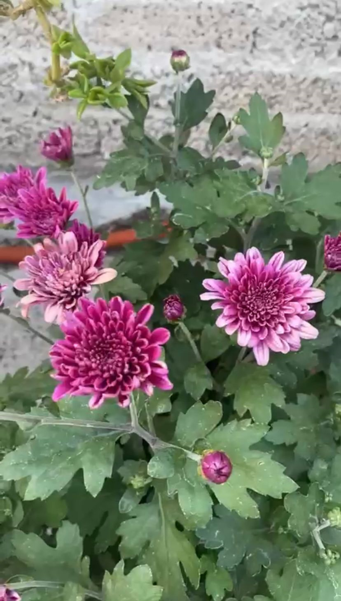

Gerberas
La gerbera es una planta que necesita bastante luz, pero sin recibir luz directa. Puedes añadirla en el salon, la cocina, o la zona que veas que la planta recibira buena iluminacion natural. Riego y humedad. La gerbera es una planta que hay que regar de forma constante sin encharcar el sustrato
